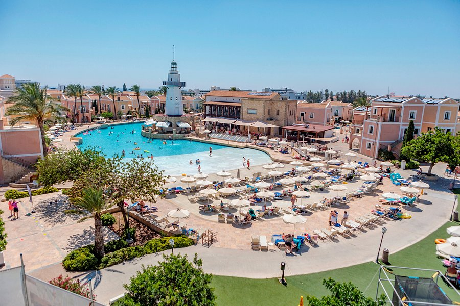
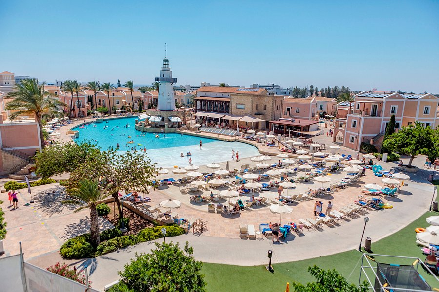

|
|
IEEE Computer Society Annual Symposium on VLSI |
|
Sponsored By:
|
The Technical Committee on Very Large Scale Integration (TCVLSI) of the IEEE Computer Society (IEEE-CS) addresses the interactions among the various aspects of VLSI design including system-level design, logic-level design, circuit-level design, and semiconductor processes. The IEEE-CS Technical Committee on VLSI also covers the computer-aided design techniques to facilitate the VLSI design process. The VLSI may include digital circuits and systems, analog circuits, as well as mixed-signal circuits and systems. The emphasis of TCVLSI falls on integrating the design, computer-aided design, fabrication, application, and business aspects of VLSI while encompassing both hardware and software. The TCVLSI sponsors conferences, special sessions, and workshops for the IEEE-CS. TCVLSI also runs VLSI and Nanoelectronics Letter, three times a year, which has many components including a very selective dissemination of quick papers, TCVLSI member news, upcoming conferences/workshops, call for papers, and funding opportunities of interest to members of TCVLSI. ARITH, IEEE Symposium on Computer Arithmetic ASAP, IEEE International Conference on Application-specific Systems, Architectures and Processors ASYNC, IEEE International Symposium on Asynchronous Circuits and Systems iSES, IEEE International Symposium on Smart Electronic Systems IWLS, IEEE International Workshop on Logic and Synthesis MSE, IEEE International Conference on Microelectronic Systems Education SLIP, ACM/IEEE System Level Interconnect Prediction ECMSM, IEEE International Workshop of Electronics, Control, Measurement, Signals and their application to Mechatronics
ISVLSI 2022 Web Chair |
 
